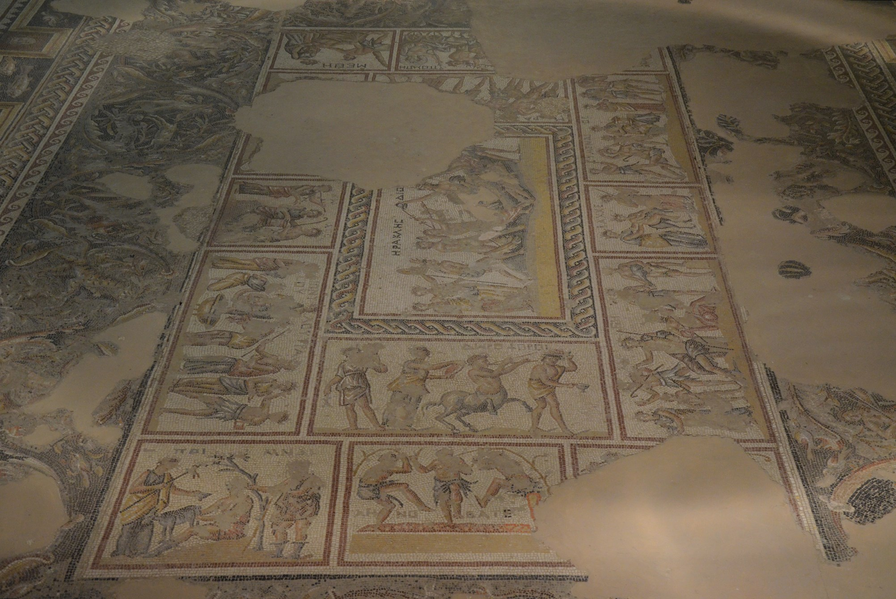

Sepphoris

- Find Name
- Sepphoris
- Description
- A hilltop Jewish city in central Galilee, about 6 km north-northwest of Nazareth, called by Josephus the 'ornament of all Galilee'. Herod Antipas rebuilt it as his Galilean capital. Excavations have uncovered a Roman theatre seating about 4,000, a colonnaded street, an aqueduct and cistern system, many mikvaot, and more than 40 mosaic floors — including the Dionysus villa with the 'Mona Lisa of the Galilee', the Nile Festival House mosaic, and a 5th-century synagogue floor with a zodiac disc, biblical panels (including the binding of Isaac) and Temple vessels. Sepphoris is never named in the Bible; no claim is made here that Jesus visited it.
- Historical Period
- Hellenistic–Byzantine
- Evidence Class
- Contextual
- Interpretations
- The city's identity as Sepphoris/Tzippori is secure. Scholars debate whether Jesus, as a craftsman from nearby Nazareth, worked on Antipas's rebuilding (a plausible suggestion, not evidence), and the synagogue mosaic's mix of zodiac, Helios-chariot and biblical scenes is read variously as decorative convention or theological statement. The standing synagogue is 5th-century, not the synagogue of Jesus' day, though an earlier public building may lie beneath it.
- Alternative Names
- Tzippori; Zippori; Diocaesarea; Autocratis
- Related Books
- Related People
- Scripture Illuminated
- Biblical Significance
- Sepphoris shows the Galilee Jesus lived in at full scale: a wealthy, thoroughly Jewish city a short walk from Nazareth, with ritual baths, synagogue worship and Roman civic life side by side. It does not prove any Gospel episode, but it corrects any picture of Galilee as a backwater of isolated villages — the world of the parables had theatres, mosaics and market streets.
- Artifact Date
- c. 2nd century BC - 5th century AD (city; mosaics mainly 3rd-5th centuries AD)
- Current Location
- In situ, Sepphoris National Park, Israel
- Date Discovered
- 1931 (first exploration); major excavations from the 1980s
- Discovery Location
- Sepphoris (Tzippori), central Galilee, Israel
- Timeline Era
- Return and Second Temple
Awaiting Review Not yet checked against scholarly sources. Treat its claims as provisional until this entry is reviewed. About verification
Last reviewed: not yet reviewed